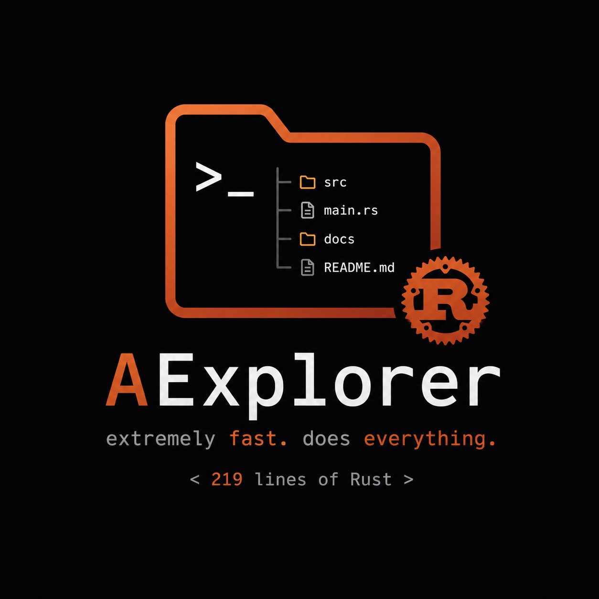

AExplorer is a ridiculously lightweight terminal file explorer written in Rust. No bloated dependencies. No massive configs. No unnecessary garbage. Just fast navigation, file management, and pure simplicity in only 219 fucking lines of code.
Most terminal file explorers try to become entire operating systems. AExplorer focuses on doing one thing properly: exploring files quickly with almost zero overhead.
Unlike terminal explorers like nnn, yazi, ranger, and similar tools, AExplorer avoids giant ecosystems, plugin systems, Lua scripting, previews, and unnecessary complexity.
Safe, fast, and memory efficient. Rust gives AExplorer native-level performance while keeping the codebase clean and reliable.
Navigate directories, create folders, create files, delete files, and open files directly in your editor through the EDITOR environment variable.
That's it. The whole thing is only 219 lines long. Tiny codebase. Easy to understand. Easy to modify. No giant code jungle.
AExplorer is completely open source under the MIT license. Read the code, modify it, fork it, or contribute freely. No proprietary nonsense.
Lines of Code
External Crate
Startup Time
Powered
AExplorer is designed to work with almost nothing installed.
Choose your platform below.
Prebuilt Windows binary for AExplorer. Just download, open terminal, and run it instantly.
(Recommended for Linux)
Download the flatpak bundle build and install it natively through your local terminal runner.
flatpak install AExplorer.flatpak
Precompiled executable binary for Linux. No setup or Rust toolchain needed — just download, grant executable rights, and run.
Want to inspect the code, modify AExplorer, or build it yourself? Download the complete source code under the MIT license.